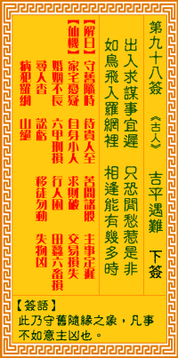

观音灵签第九十八签 【吉平遇难】 |
 | |||
经商出入事迟疑 恐惹闲愁起是非 如鸟飞投罗网陷 相看能有几人知 |
||||
| 【吉凶】 | 下下签 | 【宫位】 | 亥宫 | |
| 【签语】 | 此卦守旧随缘之象，凡事不如意主凶也。 | |||
| 【解曰】 | 守旧随时 待贵人至 若问诸般 主事定迟 | |||
| 【仙机】 | 此签家宅忧疑，自身小人，求财破，交易损失，婚姻不长，六甲刑损，行人困，田蚕六畜损，寻人杳，讼亏，移徙勿动，失物凶，病犯罗 网，山坟绝。 | |||
| 【详解】 | 经商求谋疑东疑西，恐怕遭致不必要的困扰与是非;就似飞鸟陷入罗网之中，这种情境能有几人了解呢? 禽遭罗网，有理难分，随缘守旧，遇贵乃成。此签禽遭罗网之象，凡事守旧则安。 本签者。禽遭罗网之象。凡百事守旧可获安者。诗曰。经商出入事迟疑。也因此惹闲愁。不必要之愁争。听了是是非非。谣言四播。逢遇如此罗网苦境中。必须多 修福。积德方能脱离险境者耶。易言之。君之今也。禽遭罗网有理难分。随缘守旧遇贵乃成之命耶。 此签有”借口逃避”之意。奉劝当事人，凡事不要推托。每个人都有应尽的义务与责任，在”任务”尚未达成之前，万万不可推托卸责、或自认为理所当然，把借 口合理化。尤其是为人父母者，更应负起责任，绝无任由对方辛苦、自己逍遥快活之理。遇事不要选择逃避，凡事都应勇于面对、接受。须知每个人的内心都向往 能自由自在无忧无虑，因此更应将心比心，绝对不要把自己的快乐建筑在别人的痛苦上。 | |||
| 【典故】 | 吉平是三国时代的明医，洛阳人，因痛恨曹操为人骄横霸道，和朝臣等人商议谋杀曹操，被家奴偷听到，向曹操告密。曹操假装患头风病 ，召吉平用药医治。吉平就在药中放了毒药，以毒死曹操。曹操早知有毒，即刻拿下吉平，刑枷拷打迫问，吉平终不肯招供，还破口大骂曹操，最后头撞石头而死。《三国演义》 | |||